展区 1：战略部署
欢迎来到第一展区，战略部署。
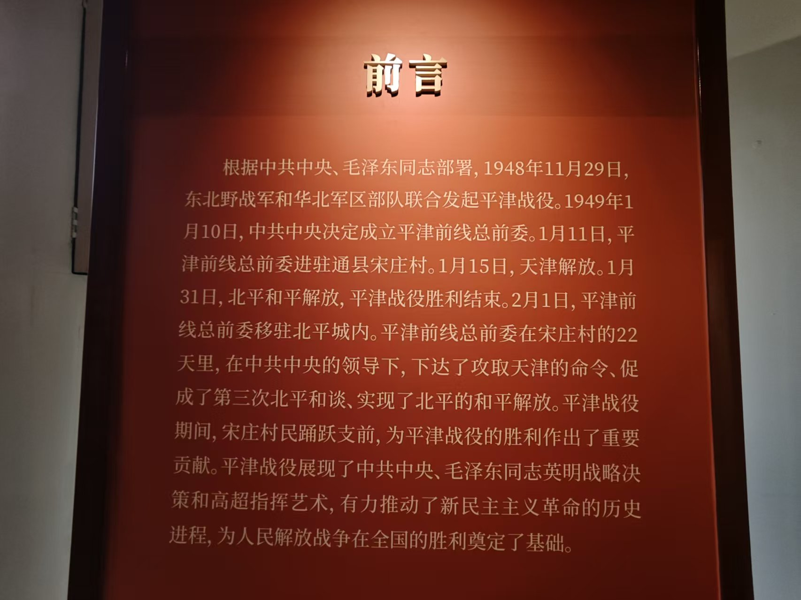
这里概述了平津前线总前委在宋庄村驻扎的22天历史，
重点讲述了在此期间下达攻取天津命令、促成第三次北平和谈及实现北平和平解放的重大决策过程。
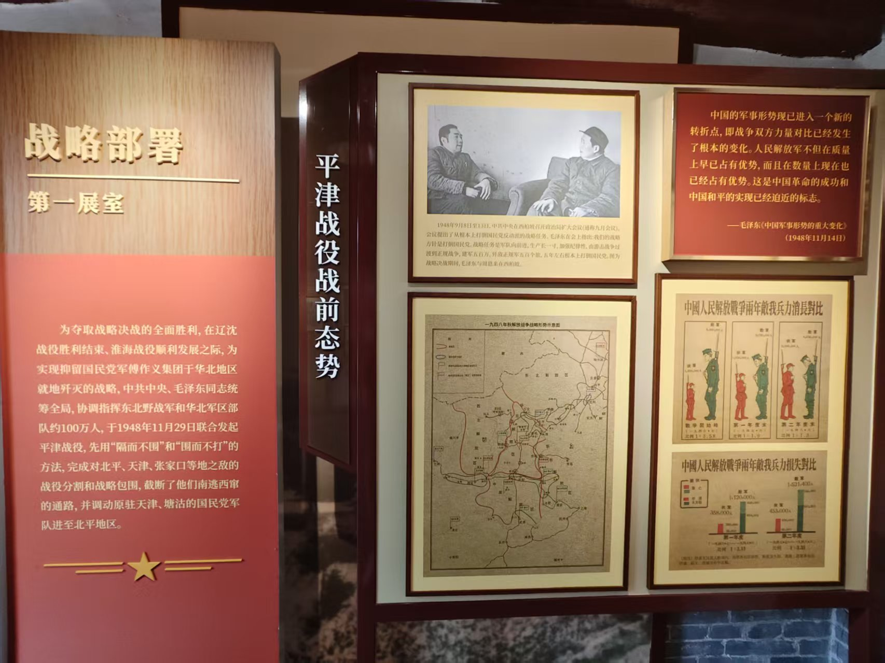
该展区通过战前态势图与兵力对比表，
展示了中共中央“抑留傅作义集团于华北地区就地歼灭”的战略构想及约100万大军的统筹布局。
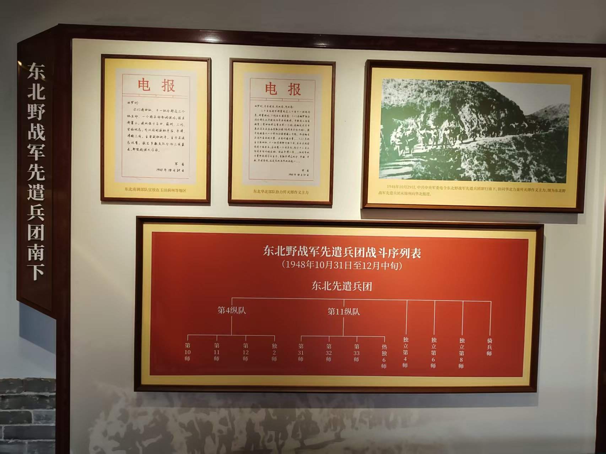
此处陈列了先遣兵团的战斗序列表及相关电报，
记录了1948年秋东北野战军先遣部队为配合主力入关而进行的早期军事行动。
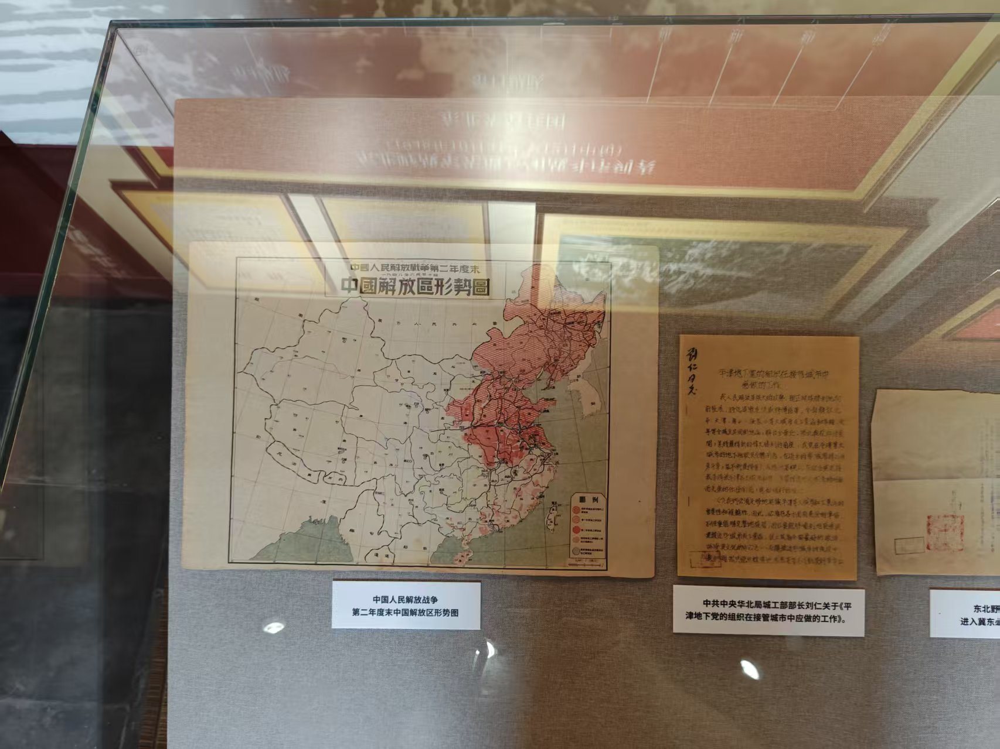
展出了1948年底的中国解放区形势图及地下党组织系统表，
直观呈现了当时的宏观战争格局以及中共在北平城内建立的迎接解放的统一指挥机构。
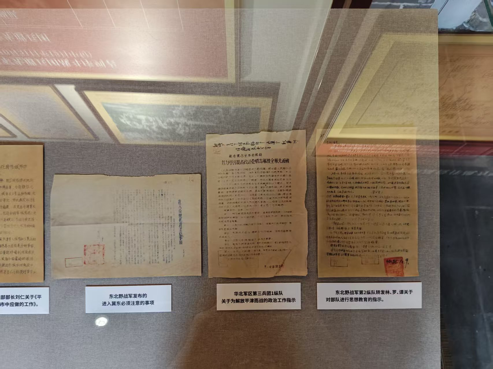
集中展示了《进入冀东必须注意的事项》等珍贵手稿与指示，
反映了部队在进入新解放区时严格的纪律要求及针对平津地区的政治工作部署。
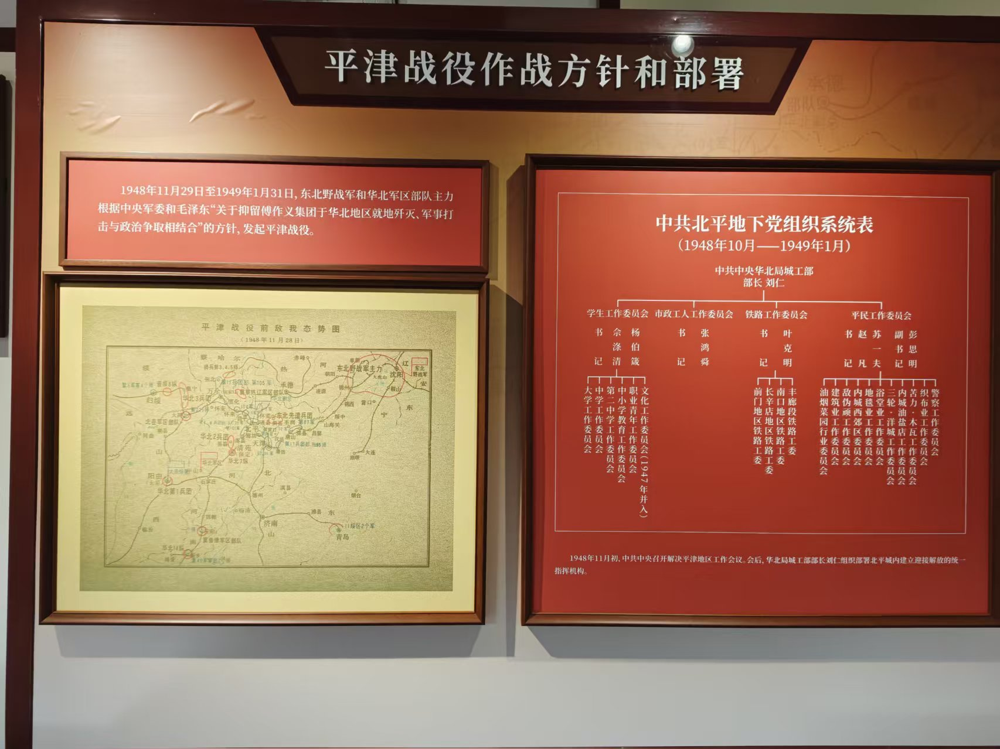
通过敌我态势图与详细的组织系统表，
阐释了中央军委“军事打击与政治争取相结合”的方针，以及中共北平地下党严密的组织架构
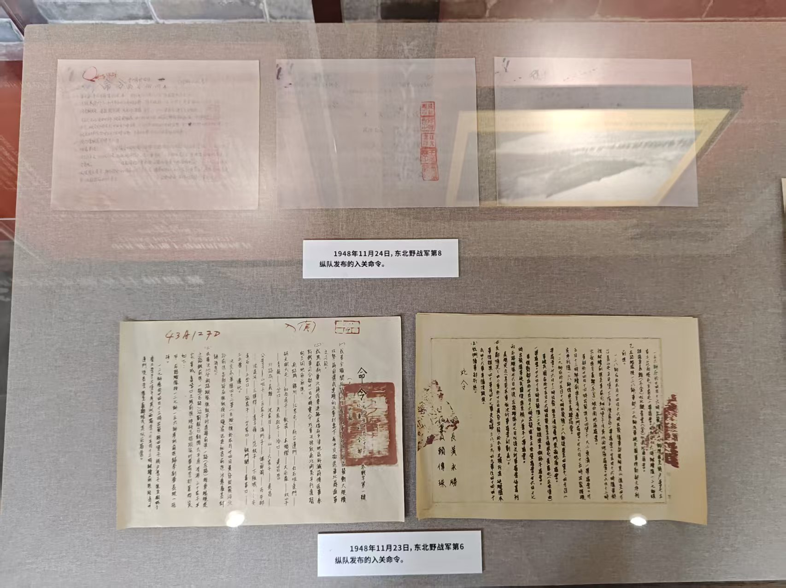
展柜中陈列着1948年11月下旬发布的入关命令手稿，
这些带有红色印章的历史文书见证了东北野战军主力部队正式向关内进发的关键时刻。
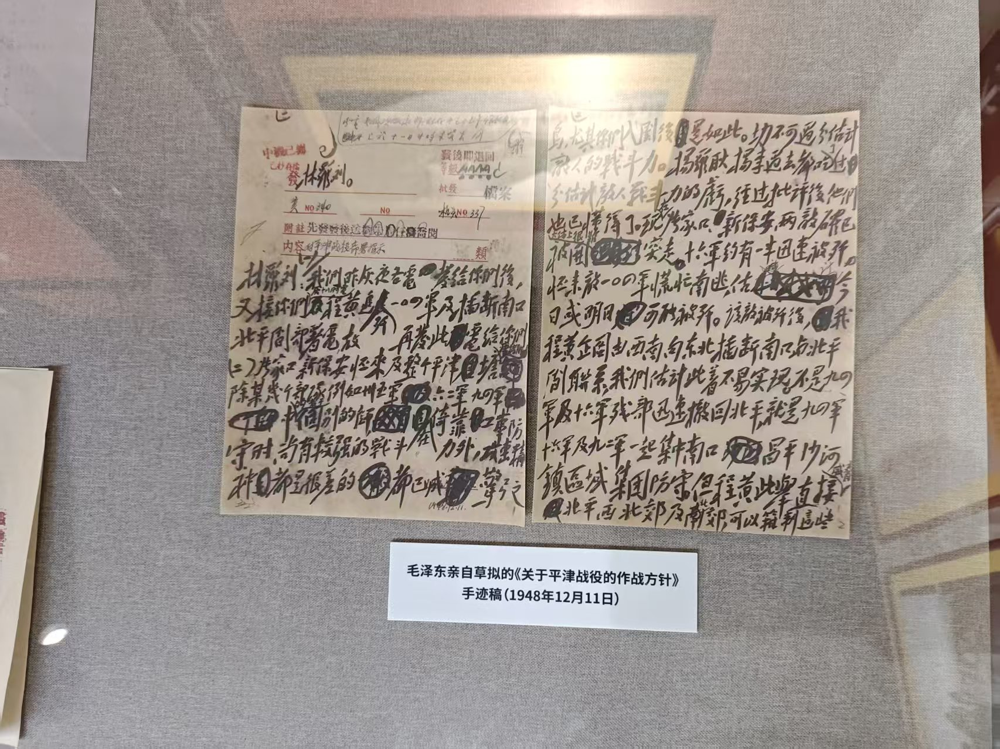
核心展品为毛泽东亲自草拟的《关于平津战役的作战方针》手迹稿，
生动体现了最高统帅部对战役全局的运筹帷幄与具体战术指导。
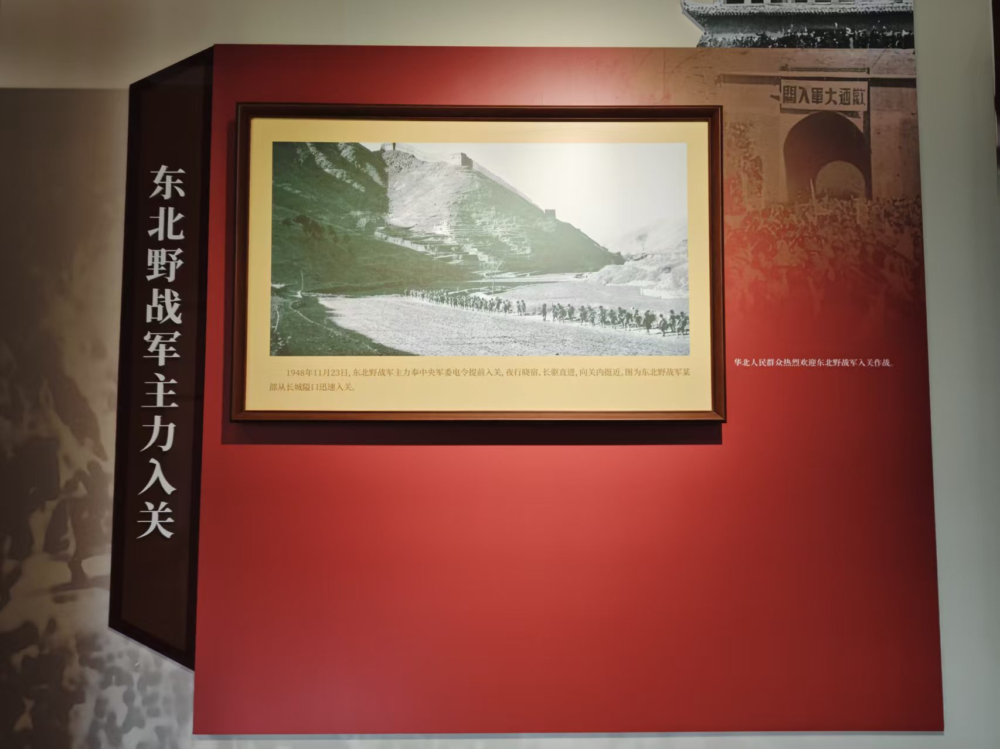
以大幅历史照片为主，
再现了1948年11月23日东北野战军主力奉命夜行晓宿、迅速从长城隘口入关的壮阔场景。
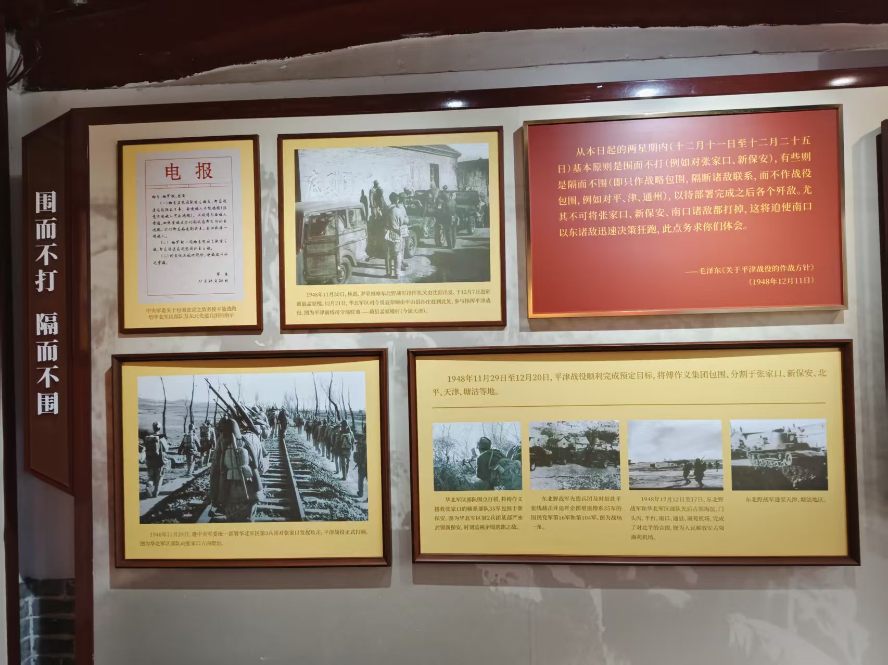
详细解读了“围而不打”与“隔而不围”的高超军事策略，
通过图文展示了如何切断敌军联系并分割包围张家口、北平、天津等地的战术实施过程。
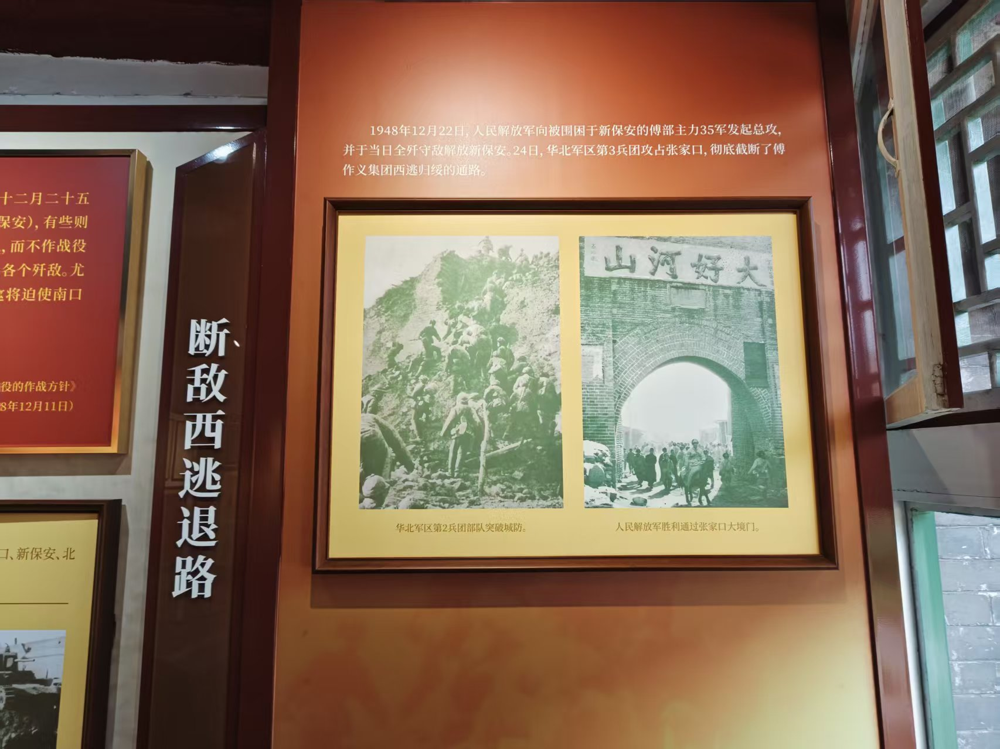
聚焦1948年12月22日至24日的关键战役，通过攻克新保安与张家口的历史照片，
展现解放军切断傅作义集团西撤绥远通道的决定性行动。